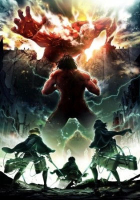

Shingeki no Kyojin 2nd Season (Sub) information
-

Shingeki no Kyojin 2nd Season (Sub)
Other name: Attack on Titan 2nd Season; 進撃の巨人 2;Shingeki no Kyojin S2
Genres: Action,Drama,Fantasy,Shounen,Super Power
Studios: Wit Studio
Date aired: Apr 1, 2017 - Jun 17, 2017
Status: Completed Views: 17,870,821
Duration: 24 min/episode Quality: HD
Summary:
For centuries, humanity has been hunted by giant, mysterious predators known as the Titans. Three mighty walls—Wall Maria, Rose, and Sheena—provided peace and protection for humanity for over a hundred years. That peace, however, was shattered when the Colossus Titan and Armored Titan appeared and destroyed the outermost wall, Wall Maria. Forced to retreat behind Wall Rose, humanity waited with bated breath for the Titans to reappear and destroy their safe haven once more. In Shingeki no Kyojin Season 2, Eren Yeager and others of the 104th Training Corps have just begun to become full members of the Survey Corps. As they ready themselves to face the Titans once again, their preparations are interrupted by the invasion of Wall Rose—but all is not as it seems as more mysteries are unraveled. As the Survey Corps races to save the wall, they uncover more about the invading Titans and the dark secrets of their own members.
Episodes
- Shingeki no Kyojin 2nd Season (Sub) Episode 0376/17/2017
- Shingeki no Kyojin 2nd Season (Sub) Episode 0366/10/2017
- Shingeki no Kyojin 2nd Season (Sub) Episode 0356/3/2017
- Shingeki no Kyojin 2nd Season (Sub) Episode 0345/27/2017
- Shingeki no Kyojin 2nd Season (Sub) Episode 0335/20/2017
- Shingeki no Kyojin 2nd Season (Sub) Episode 0325/13/2017
- Shingeki no Kyojin 2nd Season (Sub) Episode 0315/6/2017
- Shingeki no Kyojin 2nd Season (Sub) Episode 0304/29/2017
- Shingeki no Kyojin 2nd Season (Sub) Episode 0294/22/2017
- Shingeki no Kyojin 2nd Season (Sub) Episode 0284/22/2017
- Shingeki no Kyojin 2nd Season (Sub) Episode 0274/8/2017
- Shingeki no Kyojin 2nd Season (Sub) Episode 0264/1/2017